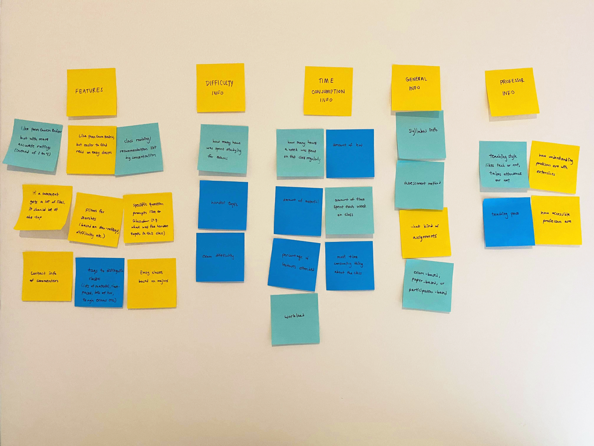
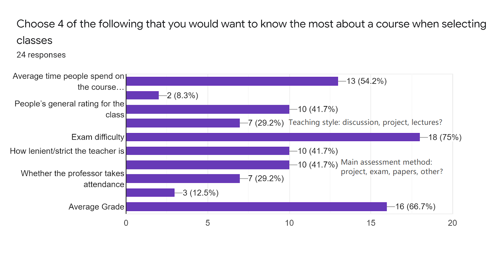

Penndoor

Overview
Class selection usually happens around the craziest time of the year, right smack in the middle of midterm season. After seeing an abundance of University of Pennsylvania students posting on Facebook asking how about certain classes and professors, my friends and I decided it's time to simplify the process. We came up with Penndoor--a glass door to the UPenn.
Problem Statement
Currently, many platforms exist to facilitate University of Pennsylvania students in class selection. There
is
PennInTouch--the school’s official class selection platform, which provides basic course info, and allows
students to plan on a schedule. There is PennCourseReview, which displays the course ratings collected by
the
school’s official survey. There is PennCoursePlan, where students can both see course reviews, and plan out
their classes on a tentative schedule. But there simply isn’t a place for real user reviews!
We aimed to create a product that would incorporate course ratings with user reviews, and act as a
one-stop-shop
for class selection info. To do so, we will pull course ratings from the school’s official course review
survey,
as well as collect and store user reviews on our own platform.
The Team
The core design and development team consisted of three people, a developer, an illustrator, and me, the product and UI/UX designer. Both being in the creative field, I teamed up with the illustrator, and taught her some UI/UX basics so we can critique each others’ designs. Knowing that I don’t have the widest reach at Penn, I asked a few well-networked friends to join in on UX research, which involved surveying other Penn students on their class selection needs.
A Team gets it Done
With the help of my friends, we were quickly able to collect responses from 20 people based on what is important to them on a class selection platform.
“I would like to know what kind of assignments would be involved. How understanding professors
are
with
extensions. I guess how easily accessible professors are.”
--a University of Pennsylvania student
The first thing I noticed after looking at the responses is that most of the information requested by people are too specific to be answered by survey questions, and justifies the comment format that we are aiming towards. The next step then, is to sort the responses. To better understand peoples’ needs and wants, I wrote the quotes onto post-it notes and organized it by category into an affinity map.
Organize, Organize, Organize
My wall, featuring the affinity map, divided into 5 categories: Features, Difficulty Info, Time Consumption Info, General Info, and Professor Info
The affinity map helped me realize what mattered to people the most about a class selection platform--1) the
core
features on the platform, such as the ability to filter class search, and 2) the class information displayed
on
the platform.
The suggestions we received about platform features were extremely useful in the beginning stages of
conceiving
our product. The original idea for Penndoor was to create a platform where students can simply comment on
classes, but after a respondent’s suggestion of using prompts to bring out the most relevant info, similar
to
Glassdoor, we decided to tweak our direction, and to include prompts as well as a comment box.
The suggestions we received about class info are useful as well, since it could point us towards what
prompts to
use. However, they are so numerous that they took up more than half the wall, under the categories: course
difficulty, time consumption, basic class info, and professor info.
What Really Matters
As with most user interfaces, more isn’t better. The existing Penn Course Review platform, for example, includes 12 ratings for each class section, ranging from the professor’s communication ability, to the value of assigned readings--I didn’t want to flood the user with an excess of information. Even though it was helpful collecting a number of suggestions on what info to include, we simply can’t include them all. To filter down the info to what really mattered, I created a second survey based on previous suggestions. With the help of my friends, we collected a total of 24 responses.
All about the User
Piecing together the affinity mapping, the survey results, and what I observed from Facebook posts, I was able to get a clearer image of what the average user looks like. It seems like the majority of the users have two goals:
1. to find high-quality, interesting classes, often within their major
2. to find easy, less time-consuming classes, often for electives
I brought the image of a Penndoor user to life through a user persona.

The Right Questions to Ask
With the user in mind, and the survey at our disposal, the team came together to select a set of prompts to include before the comment box. I explained the importance of using a limited number of prompts, as well as keeping the answers short and easy, as not to deter reviewers. For longer but still important questions, I suggested including them in the suggestions within the comment box. The team also considered a variety of other factors, such as whether the wording is ambiguous, to make the experience as easy as possible. Although still imperfect, this was considered a good starting point:
General rating* [1-5]
Number hours spent on course* [1-50]
Is attendance important?* [Yes/No]
How hard is it to get an A?* [1-5]
Comments* [50-1500]
Suggestion: Talk about the good & bad aspects of the course. Describe the grading structure of the
class.
What is the average grade? How lenient is the instructor? How difficult are the exams and assignments?
Anonymous?* [Yes/No]
Contact Reviewer: Email
But Wait, How Do We Get Reviews?
A useful platform would naturally attract users, but how would one attract reviewers? To give people an incentive to write reviews, we decided that we should ask the site’s visitors to contribute. We came up with three possible solutions:
1. First time users are asked to make a review on the platform, then they can gain unlimited
future
access to other classes.
2.A point system is kept for each user. Everytime a user comments, they receive credits, which
allow them to view a certain number of classes.
3.Users are kindly asked to make contributions, but not required to. The contribution
suggestion
would pop up everytime the user views, let’s say, 3 classes.
I was worried about solution 2 since a point system can create a barrier to using this platform. The
transactional nature of it also takes away from the good-natured intentions of our platform--allowing people
to
help people.
After careful deliberation, we decided to use a mix of solutions 1 and 3. First, when people sign up for the
platform, we will go through an onboarding, where we explain our need for reviews, and ask nicely for their
review (exempt for incoming freshmen). This is a sure way of getting reviews, and is not as high of a
barrier as
other solutions. After the user goes through onboarding, they will have future access, but will be kindly
reminded that reviews are important and appreciated.
Creating a Game Plan
To determine the necessary pages, I went on to make a user flow diagram. In my diagram, I aimed for a user flow that is as simple and intuitive as possible, while incorporating all the necessary features. I also asked the designer to join me on this exercise so we can discuss and draw strengths from each of our designs.

Using the designs, we determined that the website needs at least 5 pages: the home (search) page, log-in page, onboarding page, class list page, and class info page. Next, I showed her how to draw wireframe sketches. After rounds of critique and discussion, I summed up our ideas with a final sketch:

A Splash of Color
Moving onto high-fidelity designs, I wanted to start it off with a mood board to capture the look and feel of our future product. This mood board was inspired by cleanly illustrated notes, yellow highlighters, and doodly illustrations.

To allow a smooth division of work between the illustrator and I, we first selected the color scheme--several sunny, energetic shades of yellow, and some soft grays. Then, she began creating illustrations for the website, while I began working on the logo, and the high-fidelity website design.
Final Design
To distinguish ourselves from existing platforms, the final logo involves a speech bubble. The landing illustration also features people talking and commenting.

Some logo prototypes, and the final logo

The final wireframe flow
Key Takeaways
Overall, it was a productive learning experience. I was glad to have exercised my design skills, and to have envisioned a product that could potentially help my fellow classmates. Here are just a few of my takeaways:
1.Work with a team, or ask for help from a friend. Drawing on everyone’s strengths, the work was completed much faster. I first asked some well-networked friends to help me with UX research, which expedited the process. I then teamed up with the illustrator during the UI design phase to allow bouncing around ideas. We found that our strengths complimented each other--she had many unusual, creative ideas, whereas I designed with a focus on functionality and simplicity.
2.Investigate, don’t assume. One pitfall my team frequently fell for was assuming that our experiences represent someone else’s. However, even as University of Pennsylvania students ourselves, our experiences have differed largely. For example, while designing the prompts, one of us suggested asking whether attendance for a class is worthwhile, while another has never considered skipping classes.
3.Compromise. As the product designer, I was sometimes tempted to impose product design principles I’ve learned onto my teammates during design discussions. Through the process, I learned to put down my ego and my role, and to listen to them. Everyone has a unique and valuable perspective, and can enrich the project as a whole.
Although the developer has gotten busy since then, and the development is stalled, the project was definitely worth doing. I would definitely jump on another opportunity to do the same.